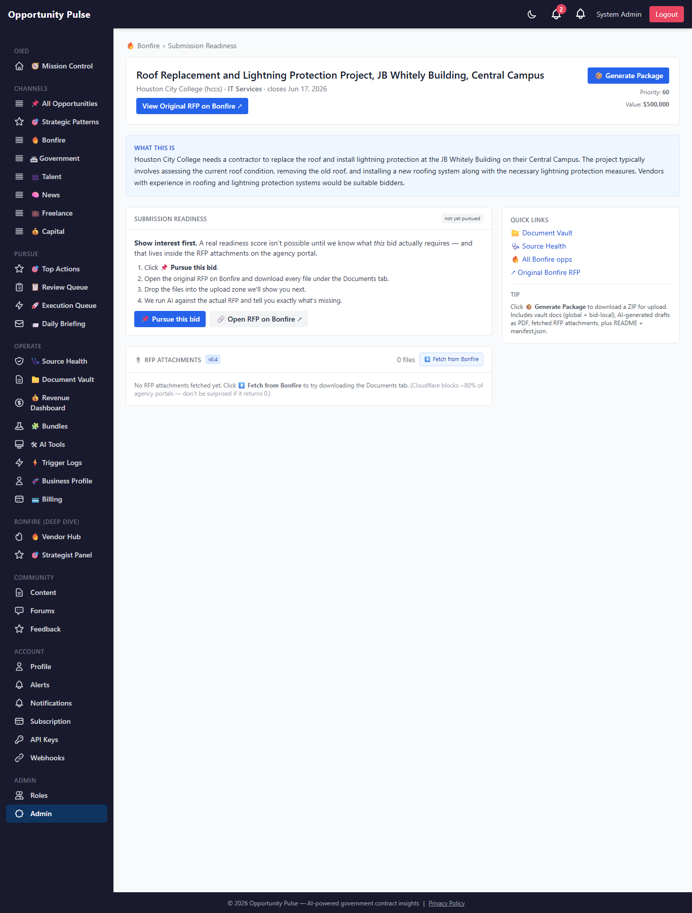
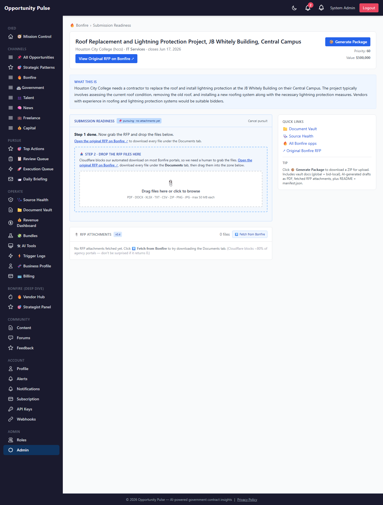
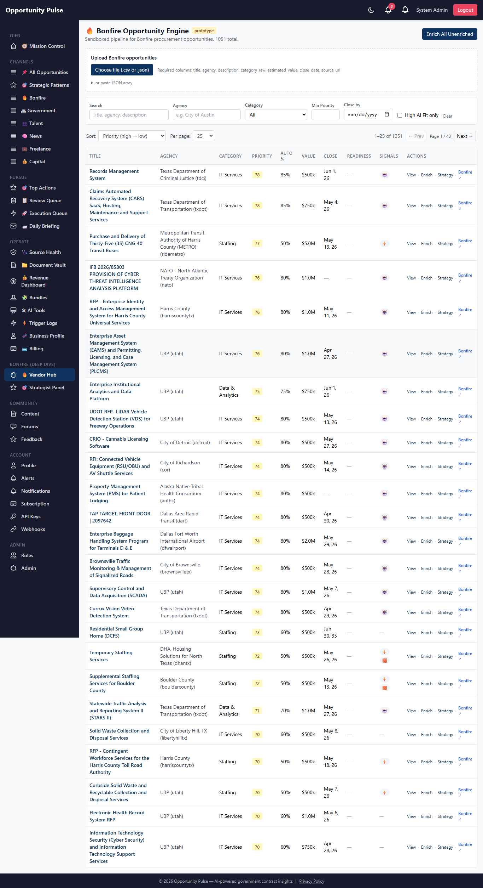

Submission Readiness v0.8 (Pursuit-First Flow)
Show interest before computing readiness · Walkthrough · 2026-05-09 · commit cdaed60
Per your feedback: "downloading the documents is going to have to be a person… that needs to be the 1st step before you can assess what % it is at."
The readiness flow is now inverted. A bid you haven't pursued shows no number — instead it shows what to do next. The 67% baseline against 6 standard docs that you saw on a freshly-opened opp is gone: until we know what this bid actually requires (which lives in the RFP body), no % can be honest.
Four states. One next-action per state. pre-pursuit → pursuing → attachments-only → tailored.
The problem with the prior flow
Before v0.8
Open any Bonfire opp, drawer renders 67% complete immediately.
- The 67% reflected: "do you have the 6 standard docs (cover letter, capability, references, COI, technical, pricing)?"
- Misleading: most of what determines a real bid (bonds, prevailing wage, EEO, page limits, MWBE thresholds) lives in the RFP PDF, not in our metadata.
- A 67% baseline implied "you're 2/3 of the way ready" when really we hadn't read the RFP at all.
After v0.8
Open the same opp → "Show interest first."
- No % until you've pursued + uploaded the RFP files + run AI tailoring.
- Each state shows exactly the next action — Pursue, Drop files here, Run AI, etc.
- The number you see at the end is real: AI read the RFP, matched against your vault, surfaced bid-specific gaps with quoted evidence.
Open in the live app
| Surface | Live URL |
|---|---|
| Bonfire opportunities list | /bonfire ↗ |
| Dedicated readiness page (any opp) | /admin/bonfire/<id>/submission-readiness — open via 📑 Open full readiness page in the drawer |
| Document Vault | /admin/documents ↗ |
The 4 states at a glance
| State | When | Number shown | Next action surfaced |
|---|---|---|---|
| pre-pursuit | Default — user hasn't expressed intent | none | 📌 Pursue this bid + open original RFP link |
| pursuing-no-attachments | Pursued, but RFP files not uploaded yet | none | Drop-zone for the user to upload the RFP files |
| attachments-only | Files uploaded, AI hasn't tailored yet | none | 🤖 Tailor with AI against the actual RFP |
| tailored | AI has read the RFP and produced a real checklist | real % + per-item status | Generate Package · 🤖 Generate per missing doc |
| submitted / declined | Terminal states (audit trail) | frozen historical record | none — bid is closed |
State A · Pre-pursuit
What you see when you open any Bonfire opp on the dedicated readiness page (default for every existing bid after v0.8 ship):

What's on screen
- Header card with the opp title, agency, value, close date — but no 📦 Generate Package button (gated until tailored).
- Body: "Show interest first. A real readiness score isn't possible until we know what this bid actually requires…"
- Numbered playbook: 1) Pursue · 2) Open RFP on Bonfire · 3) Drop files in the upload zone we'll show next · 4) Run AI.
- Two CTAs: 📌 Pursue this bid (blue, primary) and 🔗 Open RFP on Bonfire ↗ (grey, secondary).
State B · Pursuing-no-attachments
After clicking 📌 Pursue this bid, the panel switches to a drop-zone-first view:

What's on screen
- Header: 📌 pursuing · no attachments yet · "Cancel pursuit" link in the top-right (resets to pre-pursuit).
- Body copy: "Step 1 done. Now grab the RFP and drop the files below." Plus the hyperlinked Bonfire URL.
- If the prior automated fetch was Cloudflare-blocked, the body adds: "⚠ Cloudflare blocked our automated download last time, so the upload zone is the path forward."
- Embedded drop-zone: drag-and-drop OR click-to-browse. Multi-file. PDF · DOCX · XLSX · TXT · CSV · ZIP · PNG · JPG · max 50 MB each.
- Staged file list with per-file remove · clear-all · upload progress bar.
State C · Attachments-only
After files upload successfully, the panel switches to a "Run AI" CTA. (Couldn't capture a clean live screenshot for this state without uploading dummy RFP files to a real prod opp — described instead.)
┌── Submission Readiness · 📎 4 files uploaded · AI hasn't tailored yet ──┐ │ Cancel pursuit │ ├─────────────────────────────────────────────────────────────────────────┤ │ RFP files are uploaded. Run AI to read them and produce a real │ │ readiness checklist (bid bonds, prevailing wage, EEO, page limits, │ │ etc. — quoted with evidence from the RFP body). │ │ │ │ [🤖 Tailor with AI] ~10–30 seconds · uses gpt-4o-mini │ │ │ │ ▸ Need to add more files? (collapsible — same drop-zone re-shown) │ └─────────────────────────────────────────────────────────────────────────┘
Single primary CTA: 🤖 Tailor with AI. The expandable "Need to add more files?" gives you a way to drop additional files mid-flow without resetting.
State D · Tailored (the only state that shows a number)
This is the existing v0.1+v0.2+v0.6 panel that you've already seen — full % bar, per-item checklist with on-file / missing / expiring statuses, vault links, AI summary, source-quoted RFP requirements. No screenshot here because it's unchanged from v0.7; the only difference is you only get here after you've pursued, uploaded files, and run AI.
What changed in this state for v0.8:
- The % is real. Computed against the actual RFP requirements quoted by the AI, not a generic baseline.
- Generate Package is unlocked. The button stays gated in earlier states (server returns HTTP 409 NOT_TAILORED unless
?override=1for emergencies). - Pursuit context preserved. The header still carries the opp's pursuit timestamp + who pursued it.
List view — pursuit pill replaces the misleading %
On the Bonfire opportunities list, the Readiness column now shows a pursuit pill instead of an always-present percentage:

Readiness column legend (in priority order)
- 📌 pursuing — bid is being pursued; readiness pending RFP upload + AI tailoring
- ✅ submitted — terminal state, historical record
- passed — declined after consideration
- — — pre-pursuit; no number to show until you decide to bid
- real % bar — only when AI has tailored against attachments
The list doubles as a pipeline view: anything with the 📌 pursuing pill is what you're actively working on. Future filter: "show me only pursuing bids" so the list collapses to your actual pipeline.
Generate Package — gated to the tailored state
The 📦 Generate Package CTA was always present pre-v0.8. It now returns HTTP 409 NOT_TAILORED
unless the bid is in the tailored state. Reasoning: a ZIP that ships
a misleading-baseline readiness in the manifest is worse than no ZIP at all.
| Bid state | Package endpoint behavior |
|---|---|
| pre-pursuit | 409 — "Cannot package a bid in state 'pre-pursuit'. Pursue the bid…" |
| pursuing-no-attachments | 409 — same message, hint says "upload the RFP attachments…" |
| attachments-only | 409 — hint says "run AI tailoring first" |
| tailored | 200 — streams the ZIP as before |
Admin escape hatch: ?override=1 on the package endpoint bypasses the gate. Not exposed in the UI on purpose
— only for the case where AI tailoring is broken and you need to ship a bid manually.
State machine — backend mechanics
none ──pursue──▶ pursuing ──submit──▶ submitted (terminal) ▲ │ │ ├──decline──▶ declined ──pursue──▶ pursuing │ │ └────────reset (to=none) ────────┘
- Idempotent — pursuing → pursuing returns the existing record without bumping
pursuedAt. - Audit trail preserved on transitions to
declinedorsubmitted—pursuedAt+pursuedBystay populated as the historical record. - Audit cleared on transitions to
none(true reset — re-pursuing later starts fresh). - Submitted is terminal — no transitions out (audit invariant).
- 9 unit tests in
tests/bonfire/bonfirePursuit.test.jscover all valid + illegal transitions, idempotency, audit-field semantics.
Manual upload — the explicit Cloudflare bypass
The drop-zone is the answer to "Cloudflare blocks ~80% of Bonfire portals." A human opens the agency portal, downloads every file from the Documents tab, drags them into the zone, and we treat them identically to automatically-fetched files going forward.
- Endpoint:
POST /api/v1/bonfire/opportunities/:id/attachments(multipart, admin-only). - Multer: 50 MB per file × 30 files per drop. Defense in depth: same caps client-side + server-side + service-level.
- Accept list: PDF · DOCX · DOC · XLSX · XLS · TXT · CSV · ZIP · PNG · JPG. Anything else → 400 with a clear message.
- Storage: reuses the v0.4 layout — files land at
${DOCUMENT_STORAGE_ROOT}/../attachments/opportunities/<oppId>/<hash>-<name>. - Extraction: pdf-parse / mammoth / utf8 (text). Cached on the row's
parsed_textcolumn for AI tailoring to consume immediately. - Idempotent re-upload: dedupe by (opp_id, source='manual', name) — uploading
rfp.pdfagain replaces both the bytes and the parsed text. Prior bytes are cleaned up from disk. - Stamps the opp: writes
submission_requirements.last_attachment_fetch = { status: 'manual_upload', via: 'manual', at, found, saved, failed }so the panel can render the right state on reload.
Tradeoffs we accepted
| Tradeoff | Why we accepted it |
|---|---|
| Existing opps reset to pre-pursuit | The prior baseline % was misleading anyway. Better to start clean than carry forward a bad number. |
| One extra click ("Pursue") before the panel does anything | That friction is the point — it forces a real intent signal before we burn AI tokens or ship a misleading number. |
| Generic baseline checklist (6 standard docs) no longer surfaces per-bid | It still exists at the org level — the Document Vault still tracks coverage of the 6. Just not on opps you haven't decided to pursue. |
| Manual upload re-introduces a human bottleneck | Cloudflare made the automated path unreliable for ~80% of Bonfire portals. Until we add a paid CF-friendly proxy, this is the honest path. |
Files changed
| Path | Why |
|---|---|
backend/src/migrations/20260510000005-bonfire-pursuit-state.js | NEW · adds pursuit_status + pursued_at + pursued_by + index |
backend/src/models/BonfireOpportunity.js | Three new attributes mirroring the migration columns |
backend/src/bonfire/bonfirePursuit.service.js | NEW · state machine (transitions, idempotency, audit semantics) |
backend/src/bonfire/bonfireManualUpload.service.js | NEW · multipart ingest, dedupe, extraction, opp stamping |
backend/src/bonfire/bonfireReadiness.service.js | + computeReadinessState() helper, state envelope return for non-tailored states, list-summary gating |
backend/src/bonfire/submissionPackage.service.js | 409 NOT_TAILORED unless tailored or ?override=1 |
backend/src/bonfire/bonfire.controller.js | +4 handlers: getPursuitStatus, pursueBid, cancelPursuit, uploadAttachments |
backend/src/bonfire/bonfire.routes.js | +4 routes (admin RBAC) + rfpUpload multer with 50MB×30 cap + accept-list filter |
backend/tests/bonfire/bonfirePursuit.test.js | NEW · 9 tests (transitions + idempotency + audit + invalid) |
backend/tests/bonfire/bonfireManualUpload.test.js | NEW · 6 tests (create / update / oversize / no_buffer / preserve-status) |
backend/tests/bonfire/bonfireReadiness.test.js | +5 v0.8 state-gate tests + 1 summary state test; legacy tests adapted to tailored-state fixture |
frontend/src/services/bonfireAttachmentsService.js | + getPursuitStatus, pursueBid, cancelPursuit, uploadAttachments |
frontend/src/components/bonfire/BonfireUploadZone.jsx | NEW · drag/click drop-zone, multi-file staging, progress bar |
frontend/src/components/bonfire/BonfireReadinessPanel.jsx | State-machine fork — 4 sub-cards (PrePursuit, PursuingNoAttachments, AttachmentsOnly, Submitted) + legacy tailored UI |
frontend/src/components/bonfire/BonfireTable.jsx | ReadinessCell renders pursuit pills before any % |
backend/scripts/capture-submission-readiness-v08-walkthrough.js | NEW · transitions opp through states + screenshots each one |
docs/submission-readiness-v08-walkthrough.html | This file |
docs/submission-readiness-v08-walkthrough-assets/*.png | Screenshots |
PROGRESS.md | v0.8 entry |
Backend test suite: 117 suites / 1431 tests pass. One new migration, no new dependencies.
Final notes
Engine state after v0.8: the readiness flow is now honest end-to-end. No misleading numbers, no silent baselines. Every bid you're looking at on the list either shows a pursuit pill (so you know it's in your active pipeline) or shows a dash (so you know we haven't even tried to assess it yet).
What's still on the master plan:
- SAM.gov + grants.gov per-opportunity attachment fetchers (~14h). Same shape as the v0.4 Bonfire fetcher; both platforms have public APIs that don't have the Cloudflare problem, so the manual upload zone should rarely be needed there.
- Future polish: a "show only pursuing bids" filter on the Bonfire list so it doubles as a pipeline view; a "submitted on / submitted by" timeline; an inline "Mark submitted" CTA on the readiness page after Generate Package downloads.
Anything not captured anywhere above: